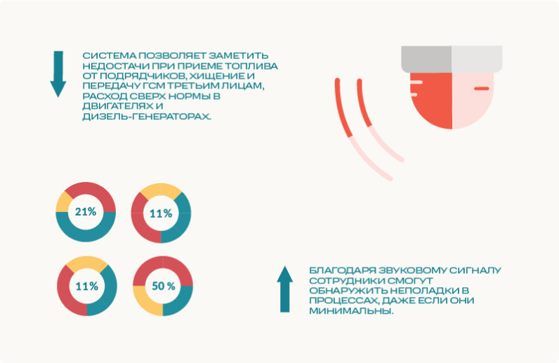

Система звукового оповещения

Звуковое оповещение — дополнительный инструмент, который используется в рамках системы контроля расхода топлива. С его помощью можно отслеживать отклонения от заданных параметров и оперативно реагировать на изменения на месте.
Это техническое решение применяется в связке с системой VMTS и не может быть установлено независимо от нее.
Для чего нужна система звукового оповещения?
Оповещающее устройство — своего рода сигнализация, которая помогает обнаруживать и пресекать нерегламентированные действия при операциях с топливом.
Оно позволяет заметить недостачи при приеме топлива от подрядчиков, хищение и передачу ГСМ третьим лицам, расход сверх нормы в двигателях и дизель-генераторах. Благодаря звуковому сигналу сотрудники смогут обнаружить неполадки в процессах, даже если они минимальны.
Как работает система звукового оповещения?
Для какого транспорта устанавливают звуковое оповещение?
Система успешно применяется на:
Что обеспечивает система звукового оповещения?
Как система звукового оповещения поможет сократить расходы на обслуживание транспорта?
Само звуковое оповещение не может решить все задачи, которые предъявляются к управлению издержками на транспорт. Но оно может помочь быстрее выявлять нестандартные ситуации, моментально находить неполадки в функционировании оборудования, пресекать попытки мошеннических операций.
Во взаимодействии с другими элементами системы контроля расхода топлива устройство оповещения позволяет выстроить устойчивый формат работы с транспортной инфраструктурой. На основе показателей, зафиксированных всей системой, можно:
Используя все доступные инструменты для контроля транспорта и выстраивая качественное планирование по результатам мониторинга, наши клиенты сокращают расходы в среднем на 5-15% в месяц.
3-6 месяцев — столько понадобится времени, чтобы окупить оборудование.
Внедрить систему мониторинга можно уже сейчас с помощью программы рассрочки от компании «Технодар».